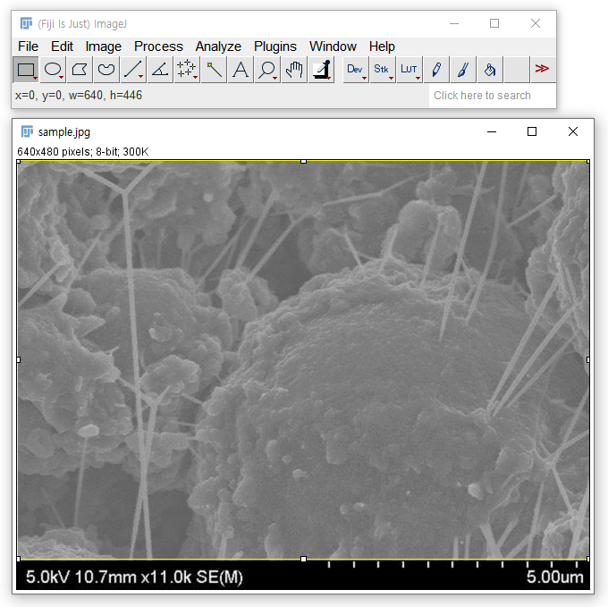

- 영상 촬영을 하다 보면 결과물이 마음에 들지 않는 여러 이유가 있습니다.
- 애초에 잘 찍으면 되겠지만 장비나 숙련도 등의 문제로 한계가 있습니다.
- 전자현미경 사진은 여기에 시료의 상태까지 한 몫 합니다.
- 방해 요소를 제외하고 자동 명도 및 대비 보정을 하는 방법을 알아봅니다.
1. 예제 이미지
- 위와 같은 전자현미경 사진을 얻었다고 합시다.
- 전자현미경은 빛 대신 전자빔을 쏘아 매우 작은 시료를 찍는 도구입니다.
- 전자빔을 충분히 강하게 쬐면 밝고 좋은 영상을 얻을 수 있지만 시료에 따라 망가지기도 합니다.
2. ImageJ 사용 보정
이미지 보정 프로그램에서 대비를 높일 수 있습니다.
ImageJ Fiji를 사용해 개선을 시도합니다.
File > Open으로 파일을 불러온 후 Image > Adjust > Bright & Contrast를 실행합니다.
B&C라는 이름의 작은 창에 이미지를 구성하는 픽셀들의 히스토그램이 보입니다.
Auto를 두 번 누르면 아래와 같이 밝아지지만 대비가 개선되지 않습니다.
이미지 하단에 촬영 조건과 스케일바가 검정과 흰색 부분으로 붙어 있어 이 부분이 걸림돌이 됩니다.
이미지를 구성하는 음영 중 최대값(white)와 최소값(black)이 정해져 있는 바람에 가운데 몰린 분포가 개선되지 않는 것입니다.
하단을 잘라내고 재시도합니다. 메뉴 바 왼쪽의 사각형을 골라 이미지 부분만 선택합니다.
Image > Crop을 실행하면 아래처럼 하단이 사라집니다.
다시 Image > Adjust > Bright & Contrast에서 Auto를 실행하면 비로소 선명해집니다.
하지만 스케일 바를 비롯한 중요 정보를 잃어버린 상태입니다.
논문에 싣거나 내부 발표라도 하려면 스케일 바를 다시 붙여야 합니다.
몹시 귀찮아지고, 잘 하더라도 실수가 생길 수 있습니다.
무엇보다 대개 이런 이미지는 한 두 장으로 끝나지 않습니다. 자동화가 필요합니다.
3. scikit-image 사용 보정
3.1. scikit-image 설치
- 파이썬에는 이미지 처리 라이브러리가 여럿 있습니다.
- 오늘은 scikit-image를 사용해 작업합니다.
pip를 사용해 설치할 수 있습니다.1
!pip install scikit-image -U
3.2. 이미지 불러오기
skimage.io의imread모듈을 사용해 이미지를 읽고imshow로 출력합니다.1
2
3
4
5
6
7
8
9import numpy as np
from skimage.io import imread, imshow
import matplotlib.pyplot as plt
infilename = "sample.jpg"
img_ = imread(infilename)
print(type(img_))
imshow(img_)imread로 읽은 이미지의 정체는numpy.ndarray입니다.출력된 이미지의 정체는 사실
matplotlib.image.AxesImage입니다.scikit-image내부에서matplotlib을 호출하는 것입니다.imshow(img_)대신plt.imshow(img_, cmap="Greys_r")를 실행해도 같은 결과를 얻을 수 있습니다.
3.3. 이미지 및 하단 영역 크기 분리
이미지 크기는
.shape을 출력해 확인할 수 있습니다.1
img_.shape
- 실행 결과
1
(480, 640)
- 실행 결과
이제 하단 영역의 높이를 알아볼 차례입니다.
x = 300 지점에서 세로로 나열된 픽셀들의 line profile을 확인합니다.
1
2
3
4
5
6
7
8fig, axs = plt.subplots(ncols=2, figsize=(10, 4), constrained_layout=True)
axs[0].imshow(img_, cmap="Greys_r") # 왼쪽 Axes에 Image 출력
# x = 300을 추출해서 오른쪽 Axes에 line profile 출력, 왼쪽에 선 표시
x = 300
axs[1].plot(img_[:, x], c="orange") # 오른쪽 Axes에 line profile 출력
axs[0].axvline(x, c="orange") # 왼쪽 image 위에 해당 line 출력450 부근부터의 데이터 값이 모두 0입니다.
여기가 하단 메타데이터 영역입니다.
말단 50개 데이터를 출력해 0을 세어 보면 0이 31개 있습니다.
1
img_[-50:, x]
- 실행 결과
1
2
3
4array([118, 112, 115, 113, 111, 122, 122, 118, 111, 114, 111, 116, 122,
120, 120, 123, 124, 101, 25, 0, 0, 0, 0, 0, 0, 0,
0, 0, 0, 0, 0, 0, 0, 0, 0, 0, 0, 0, 0,
0, 0, 0, 0, 0, 0, 0, 0, 0, 0, 0], dtype=uint8)
- 실행 결과
480행 중 31행이면 16분의 1을 조금 넘습니다.
여유 있게 하단 15분의 1을 잘라내고 위쪽을
img, 아래쪽을desc(description)라고 부릅니다.1
2
3
4
5
6
7
8
9
10
11h, w = img_.shape
imgfrac = 14/15
img = img_[:int(h*imgfrac), :]
desc = img_[int(h*imgfrac):, :]
fig, axs = plt.subplots(ncols=2, figsize=(10, 4), constrained_layout=True)
axs[0].imshow(img, cmap="Greys_r")
axs[1].imshow(desc, cmap="Greys_r")
fig.savefig("118_autocontrast_8.png")잘라낸 것만으로 왼쪽 그림이 선명해졌습니다.
Matplotlib이 그림을 보여주면서 데이터의 최소값과 최대값을 자동으로 적용했기 때문입니다.
원본
img_와 하단을 잘라낸img의 데이터 분포를 확인합니다.1
2
3
4
5
6
7
8fig, axs = plt.subplots(ncols=2, figsize=(10, 4), constrained_layout=True,
sharex=True)
for ax, im, title in zip(axs, [img_, img], ["original", "image only"]):
ax.hist(im.flatten(), bins=np.linspace(0, 255, 30))
ax.text(0.7, 0.95, f"min = {im.min()}\nmax = {im.max()}", va="top",
fontsize="x-large", transform=ax.transAxes)
ax.set_title(title, fontsize="x-large", pad=12)원본이 0
252까지 범위를 가지는 데 비해 이미지 영역만 따지면 75187에 분포하고 있습니다.
3.4. 이미지 영역에 auto contrast 적용
이미지의 최대값과 최소값을 0~255로 폅니다.
그 전에, 전자현미경 같은 디지털 영상에 흔한 salt and pepper noise 대응책을 마련합니다.
salt and pepper noise는 영상 위에 희고 검은 점이 흩뿌려지는 현상입니다.
전기 신호가 불안정하거나 원본의 대비가 잡음보다 약할 때 주로 생깁니다.

numpy.percentile()로 전체 데이터의 상하위 0.2%씩을 제거한 뒤,skimage.exposure.rescale_intensity()를 사용해 0부터 255까지 데이터의 범위를 늘려줍니다.1
2
3
4
5
6
7
8
9
10
11
12
13
14
15
16
17
18
19
20from skimage import exposure
# salt and pepper noise 제거
v_min, v_max = np.percentile(img, (0.2, 99.8))
# auto contrast 적용
img_ac = exposure.rescale_intensity(img, in_range=(v_min, v_max), out_range=(0, 255)).astype(np.uint8)
# 전후 비교
fig, axs = plt.subplots(ncols=2, figsize=(10, 4), constrained_layout=True)
for ax, im, title in zip(axs, [img, img_ac], ["original", "auto contrast"]):
ax.imshow(im, cmap="Greys_r", vmin=0, vmax=255)
x_pos = 0.045
if ax == axs[1]:
x_pos += 0.5
ax_inset = fig.add_axes([x_pos, 0.69, 0.15, 0.2])
ax_inset.hist(im.flatten(), fc="orange", ec="k", bins=np.linspace(0, 255, 30))
ax_inset.set(xlim=(0, 255), yticks=[], xticks=[])
ax.set_title(title, fontsize="x-large", pad=12)
3.4. 하단 영역 결합
- 이제 처음에 분리해 둔 하단 영역을 결합할 차례입니다.
numpy.vstack()을 사용합니다.- 파일 저장은
skimage.io의imsave로 실행합니다.
1 | from skimage.io import imsave |
- 스케일바를 비롯한 정보가 돌아왔습니다.
4. 주의 사항
분석을 열심히 하다 보면 크기를 재거나 중요 지점을 표시할 때가 있습니다.
여기에 위 코드를 동일하게 적용합니다.
1
2
3
4
5
6
7
8
9
10
11
12
13
14
15
16
17
18
19
20
21infilename = "sample_annot.png"
# read image
img_ = imread(infilename)
# image split: img + desc
imgfrac = 14/15
img = img_[:int(h*imgfrac), :]
desc = img_[int(h*imgfrac):, :]
# remove salt and pepper noise
v_min, v_max = np.percentile(img, (0.2, 99.8))
# apply auto contrast
img_ac = exposure.rescale_intensity(img, in_range=(v_min, v_max), out_range=(0, 255)).astype(np.uint8)
# merge images
img_merge = np.vstack((img_ac, desc))
# save file
imsave("annot_autocontrast.png", img_merge)그리고 결과를 확인해 보면 대비 보정이 적용되지 않았습니다.
1
2
3
4
5
6
7
8
9
10
11fig, axs = plt.subplots(ncols=2, figsize=(10, 4), constrained_layout=True)
for ax, im, title in zip(axs, [img_, img_merge], ["original", "auto contrast"]):
ax.imshow(im, cmap="Greys_r", vmin=0, vmax=255)
x_pos = 0.045
if ax == axs[1]:
x_pos += 0.5
ax_inset = fig.add_axes([x_pos, 0.69, 0.15, 0.2])
ax_inset.hist(im.flatten(), fc="orange", ec="k", bins=np.linspace(0, 255, 30))
ax_inset.set(xlim=(0, 255), yticks=[], xticks=[])
ax.set_title(title, fontsize="x-large", pad=12)이미지 영역에 추가한 표지가 문제가 되는 경우입니다.
salt and pepper noise를 제거하기 위해 상하위 0.2%만 제거했는데, 이 그림에는 하양과 검정으로 표현된 화살표와 글자들이 0.2%를 넘어섰기 때문에 제거되지 않고 명도의 최대값고 최소값으로 인지된 것입니다.
이러한 보정은 추가 정보를 기입하지 않은 상태에서 적용해야 올바르게 적용되니 주의해야 합니다.